暗夜精灵3安装mac黑苹果
- 作者:
- 淡白
- 创建时间：
- 2021-06-06 20:32:25
- mac 黑苹果
摘要：该文章是一篇关于如何在台式电脑上安装黑苹果系统的教程。作者先介绍了自己准备玩黑苹果的动机和所需的工具。然后详细介绍了如何制作Mac启动盘和安装Mac系统的步骤。最后提到了一些引用的文章和参考链接。
前言
买了台式后笔记本没有怎么使用比较闲置，正好有时间准备给装个黑苹果玩玩。也顺便学习学习看看在mac上开发是怎样一种体验。
准备
开始前先准备以下东西：
- 一个16gU盘（需要10g左右空间）
- MacOS镜像
- TransMac 或 etcher(看到过其他教程用过，我这里没用过刷树莓派到是用过)
- 分区工具DiskGenius
- EFI引导
镜像：这里提供一下我下载镜像的地址：点击进入下载 版本呢我选择的是10.15.7(19H2)不支持macOS Big Sur 11.x TransMac ：点击下载 DiskGenius：进入官网下载 EFI引导：下载
开始
准备工作完成后开始进入正题。
制作Mac启动盘
1.初始化u盘 记得备份数据 插入U盘打开DiskGenius 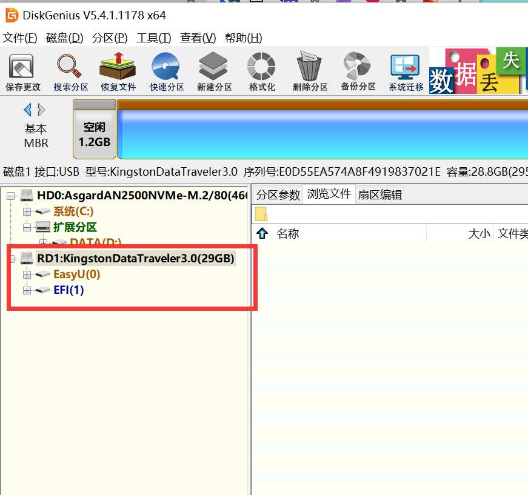 选择u盘设备右键，删除所有分区保存更改。然后新建一个分区，完成后关闭软件。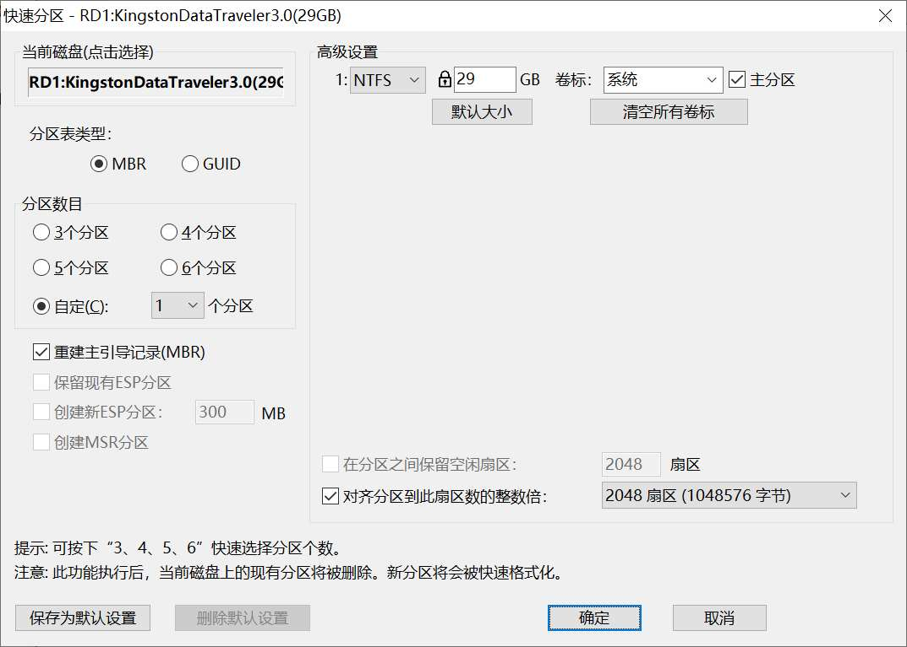
2.写入mac镜像 打开TransMac.exe软件 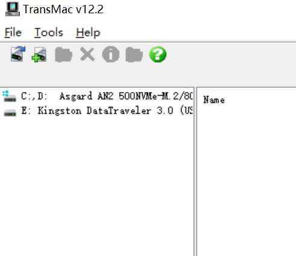 同样会有对应的U盘设备鼠标移动到设备上右键选择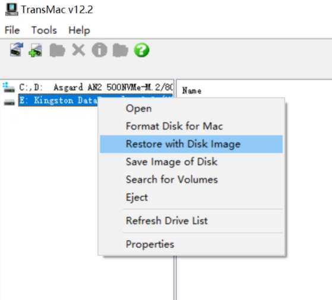 提示框选择Yes、OK无需其余修改。 操作完成后再鼠标右键选择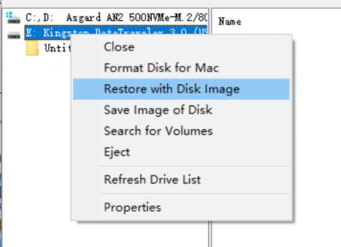 弹出提示框选择文件，选我们下号的mac镜像文件 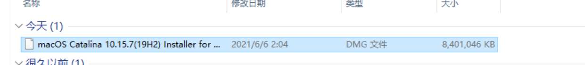 点击yes、OK后继续等待进度条完成大概十几分钟（取决u盘写入速度）关闭软件。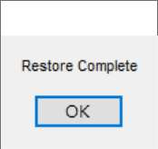完成
- 替换EFI 再打开DiskGenius 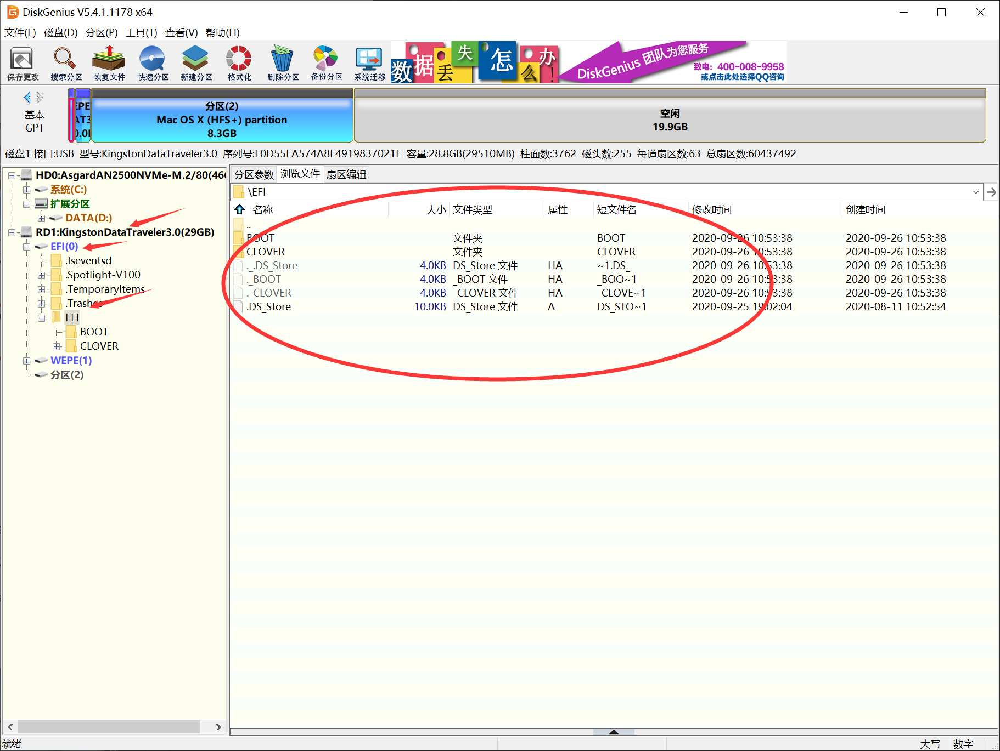 找到这个位置选择全部文件右键强力删除 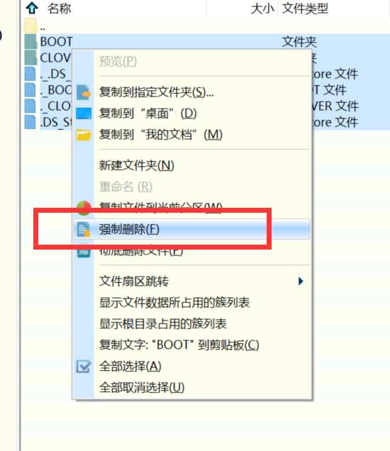 然后再吧我们下载的EFI文件给放进去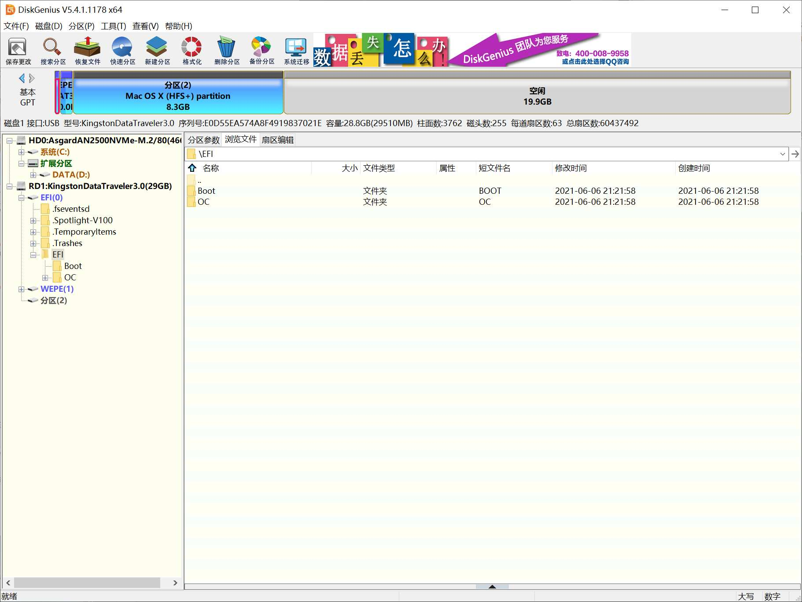 之后可以关闭软件拔出U盘开始安装系统了。
安装Mac系统
将启动盘插入笔记本,通电开机笔记本然后点按ESC进入启动菜单 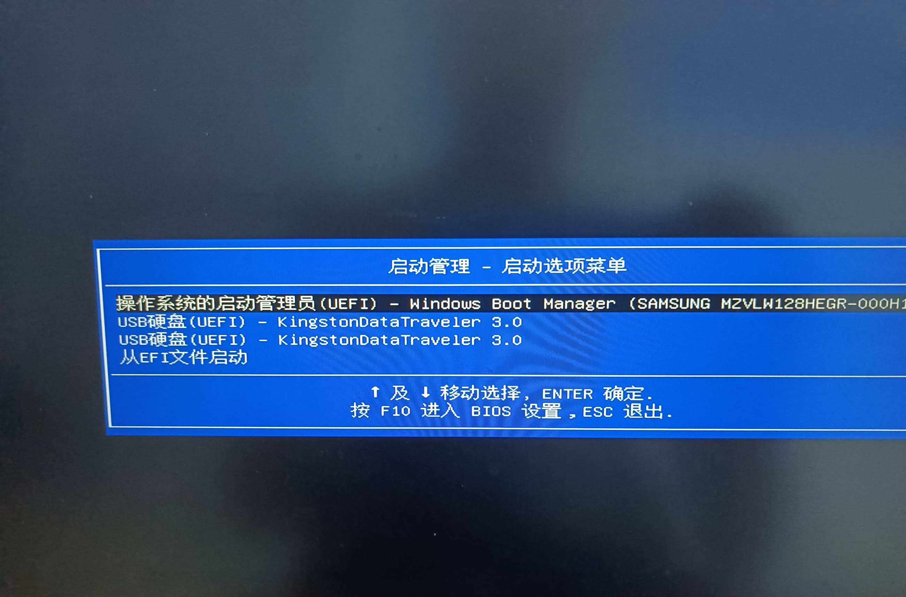 F9进入引导菜单 选择第一个你u盘名字的启动项回车。 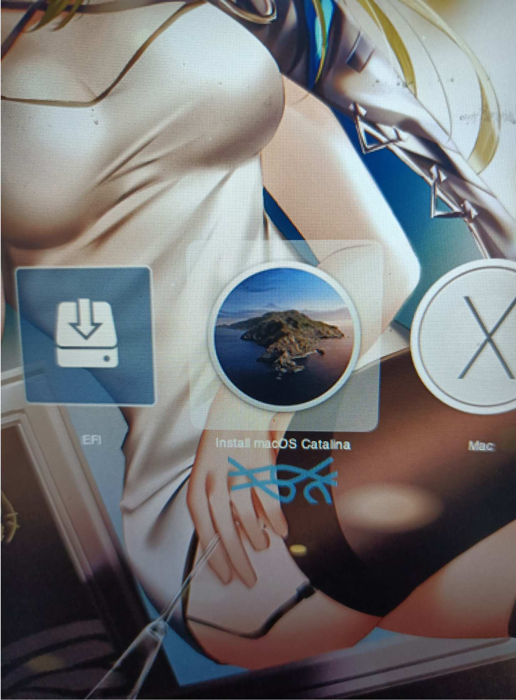 进入这个界面选择Insstall mac Catalina 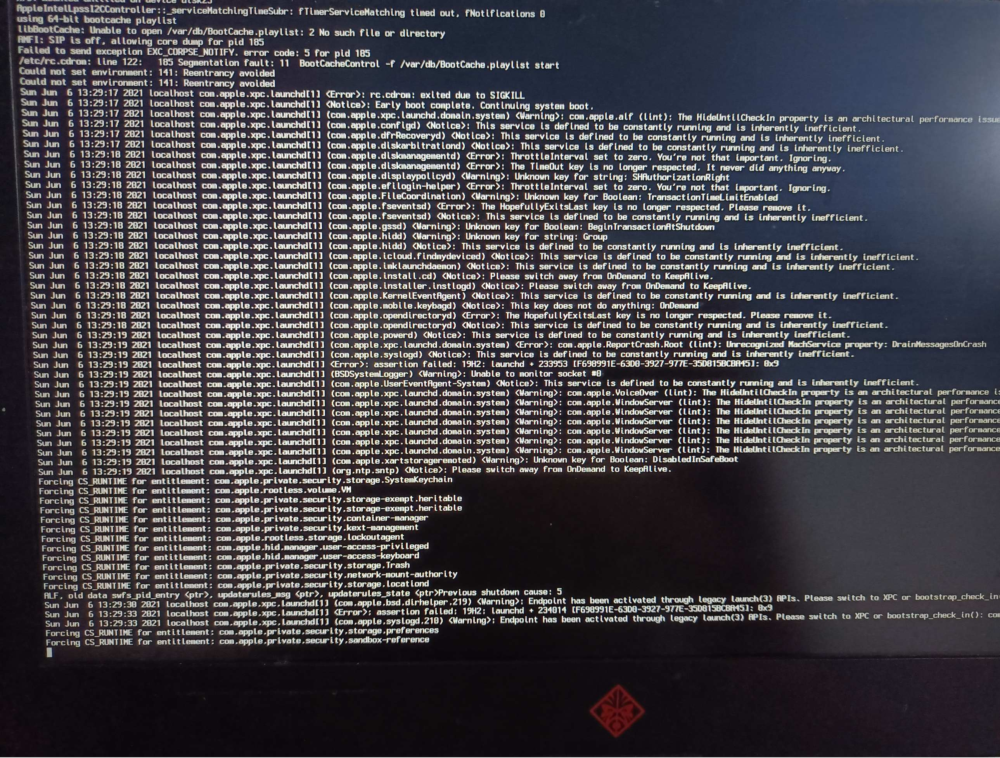 等等加载完成，进入mac安装界面。 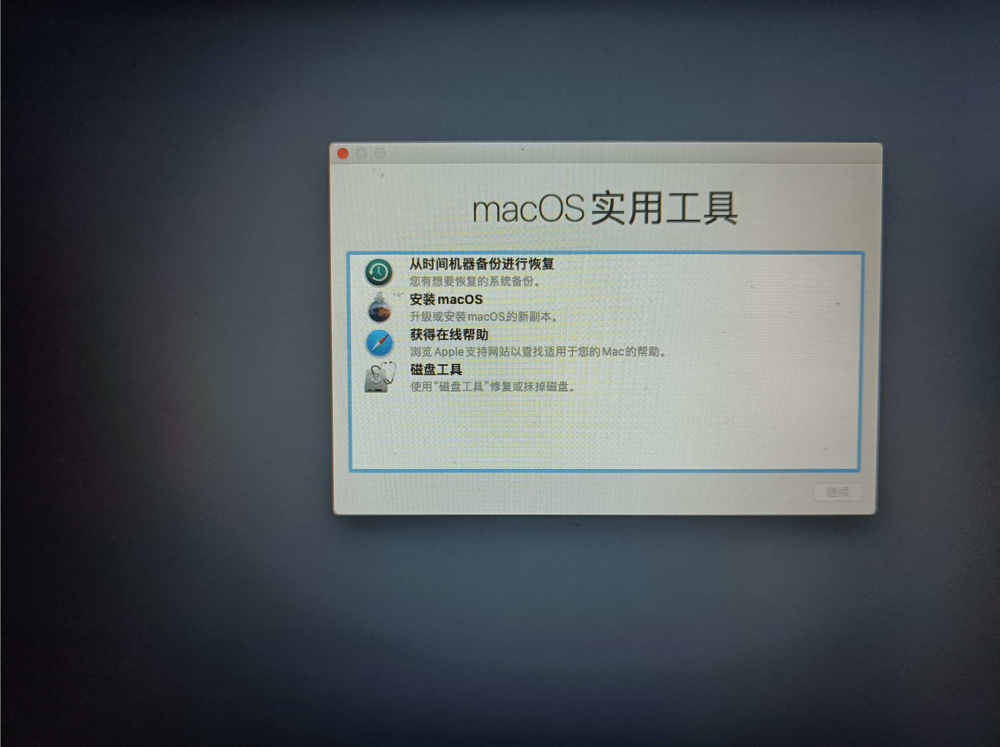 选择磁盘工具 然后对你原来的windows盘或者一个你需要安装mac的盘进行抹除格式改为Mac OS扩展（日志式） 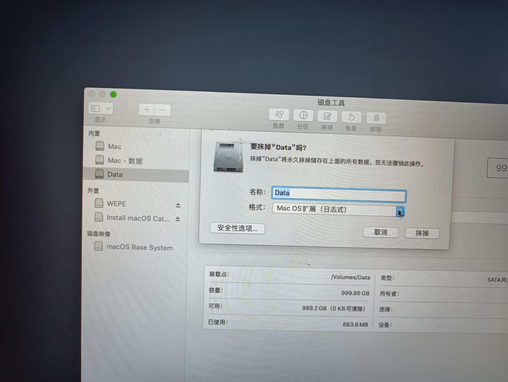 分区后再关闭磁盘工具窗口回到首界面选择安装macOS，期间大约30分钟左右。 安装完成后通过U盘启动选择界面选择MAC完成安装。 引导修复，安装完成mac后不需要再用u盘启动，需要最后用u盘进入winpe系统也就是在前面引导菜单那里出现的两个同名u盘名的启动项的第二个。 进入PE使用BOOTICE软件。找到UEFI-修改启动序列-添加 ，再挂载的EFI分区里面，找到OC文件夹下面的OpenCore.efi文件，选择并打开: 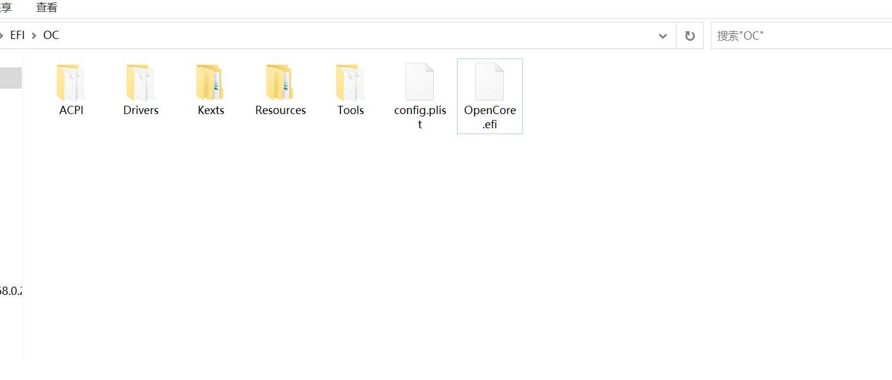 添加完后关机拔掉u盘能顺利启动mac就成功了。